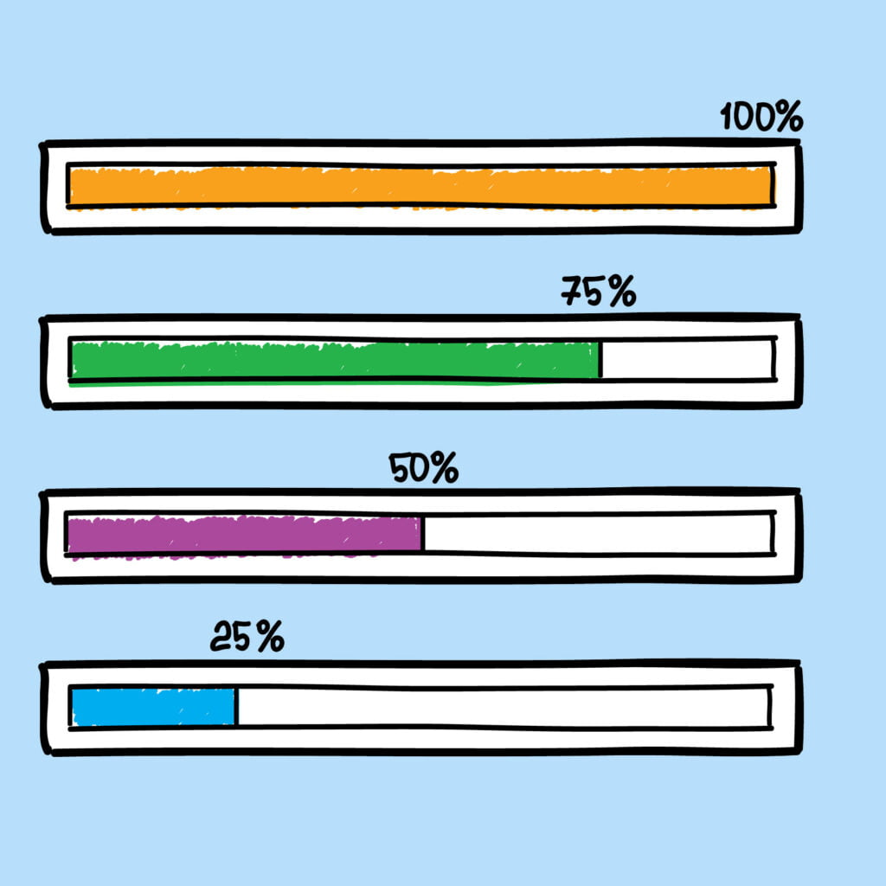

<ion-header>
    <ion-toolbar color="primary">
        <ion-title>Inicio</ion-title>
    </ion-toolbar>
</ion-header>

<ion-content>
    <ion-card>
        
        <ion-card-header>
          <ion-card-title>Hola bienvenido</ion-card-title>
          <ion-card-subtitle>Aqui vas a usar una barra de progreso</ion-card-subtitle>
        </ion-card-header>
      
        <ion-card-content>
          Con esta barra podras sumar o restar uno al progreso o modificarla
          con un selector de progreso.
        </ion-card-content>
        <ion-button routerLink="/barradeprogreso" expand="block" shape="round">
            Iniciar Prueba
        </ion-button>
      </ion-card>
</ion-content>
